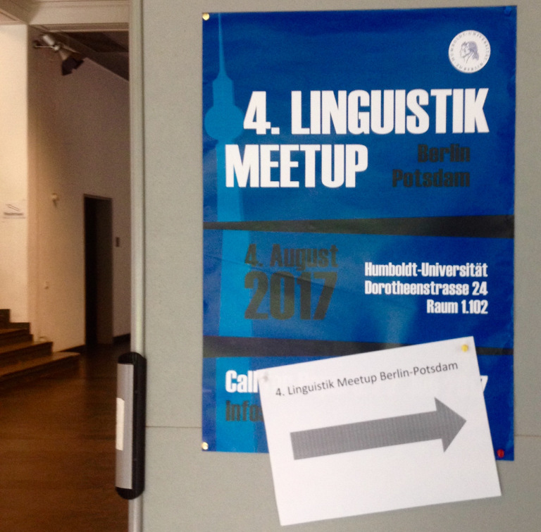

It’s a hot morning on August 4th in Berlin, summer holidays are already on… But at the Institute of German Language and Linguistics of Humboldt Uni there’s much ado about something: the 4th Linguistics Meetup Berlin-Potsdam!
This annual event brings together BA/MA/PhD students of Linguistics from Humboldt-, Free-, and Technical Universities of Berlin and Potsdam University, who present their research interests, projects, or dissertations. It’s a great opportunity to get out of our own uni-caves, exhange ideas and get feedback from other students, while honing our presentation skills.
The meetup doesn’t set a theme, talks and posters are accepted from all branches of linguistics. Corpus analyses of 18th century texts and fundraising letters, learning/teaching German as second/foreign language, mnemonics for language learning, typology, voice therapy, medical and law terminology, and clinical linguistics were presented in the 4 posters and 12 talks that made up this year’s programme.

I participated with a talk about the impairment of concrete and abstract words in semantic dementia (SD). My interest in this topic was sparked a couple of months ago in a seminar on the development of the mental lexicon. Since I’m fascinated by all (language) disorders, I chose to write the term paper on SD. You can find my presentation slides here.
- What is semantic dementia?
- Signs of semantic dementia
- Concrete vs. abstract words in semantic dementia
- Tests for semantic dementia
- A case study of semantic dementia
- References
What is semantic dementia?
Semantic dementia (SD) is a progressive neurodegenerative disease of Alzheimer’s type, caused by brain cells dying off. Unlike Alzheimers’s disease (AD), SD originates in the temporal lobes and more often in the left one, which is known to be reponsible for language comprehension. For this reason, SD is classified as a form of frontotemporal dementia (FTD), more specifically a linguistic form of FTD, along with progressive non-fluent aphasia (PNFA).

Signs of semantic dementia
The onset of SD is typically between 45-75 years. In the beginning, patients might show difficulties naming or recognizing objects (e.g., see a cup and not know what it is or how to use it), and in time start to use more general terms instead of specific names (e.g., animal instead of cat or thing for different objects). Though they might still be able to speak fluently, they might be incoherent.
| preserved | impaired |
|---|---|
| grammar | semantic knowledge |
| repetition of single words | word comprehension |
| fluent speech | understanding of objects and actions |
| episodic and working memory | anomia (word finding) |
| problem solving | social cognition |

Concrete vs. abstract words in semantic dementia
An interesting aspect is that abstract and concrete words seem to be differently impaired. Patients with SD are better at naming:
- non-living things (e.g., hammer) than living things (e.g., dog).
- words from different categories (e.g., banana, nose) than from the same category (e.g., shoes, gloves).
It also seems like body parts are better preserved than tools. - concrete words (e.g., cabbage, bus) than abstract words (e.g., freedom, honesty).
This is known as the concreteness effect and applies to the general population as well. However, there are some curious cases of reverse concreteness effects in SD, where patients know abstract words better than concrete words, but so far there’s no clear explanation for this.
Tests for semantic dementia
a) Description-to-noun matching
b) Description-to-verb matching
c) Synonym judgement
d) Verb similarity
e) Mischievious monkey test with words
f) Mischievious monkey test with pictures
g) Shallice and McGill word-picture matching

A case study of semantic dementia
A case study that impressed me is that of Iris Murdoch, the prolific British writer, best known for the novel The sea, the Sea which won the Booker Prize in 1978. However, her last novel Jackson’s Dilemma (1995) was surprisingly weak and critics commented on her simple, at times incoherent writing style. Shortly afterwards, Iris Murdoch was diagnosed with AD, confirmed after her death in 1999. What does this have to do with literature? Apparently her “poor writing style” actually revealed signs of her cognitive decline.
A team of researchers carried out a computer text analysis of three of her novels: Under the Net (1954), The Sea, the Sea (1978), and Jackson’s Dilemma (1995). They found that the last novel had a limited vocabulary, with highly frequent and more repeated words, compared to the other two. These are characterictics of SD and AD, which unfortunately were not recognized at the time.
This study suggests how creative writing could be an insightful assessment of people with or even at risk of dementia. By analyzing various word features (e.g., concreteness, imageability, emotion, frequency, semantic category), along with research on the neural representation of words, could indicate earlier signs of different forms of dementia.
References
- Cherkow, H. & Bub, D. (1990). Semantic memory loss in dementia of Alzheimer’s type. Brain, 113, 397-417.
- Garrard, P. et al. (2005). The effects of very early Alzheimer’s disease on the characteristics of writing by a renowned author. Brain, 128, 250-260.
- Hoffman, P. & Lambon Ralph, M. A. (2011). Reverse concreteness effects are not a typical feature of semantic dementia: Evidence for the hub-and-spoke model of conceptual representation. Cerebral Cortex, 21(9), 2103–2112.
- Jefferies, E. et al. (2009). Comprehension of concrete and abstract words in semantic dementia. Neuropsychology, 23, 492-499.